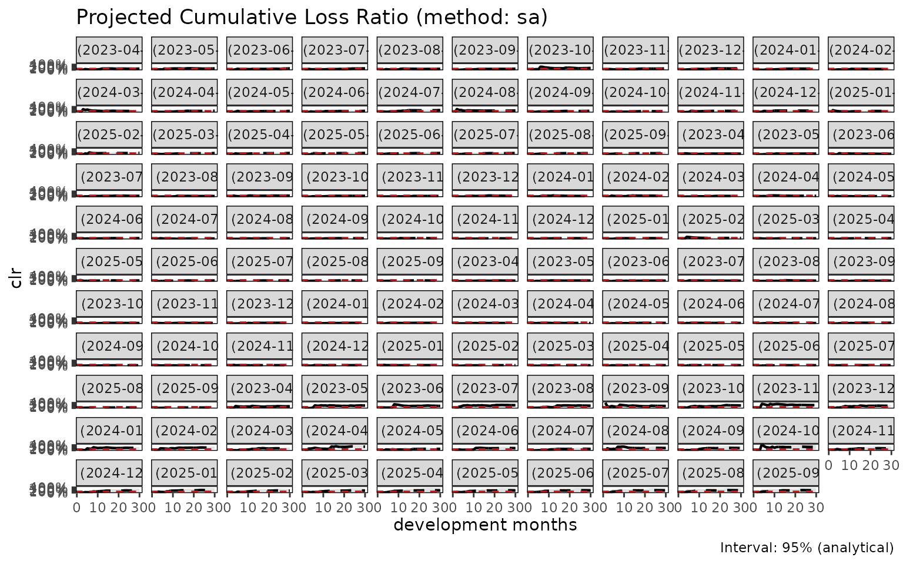
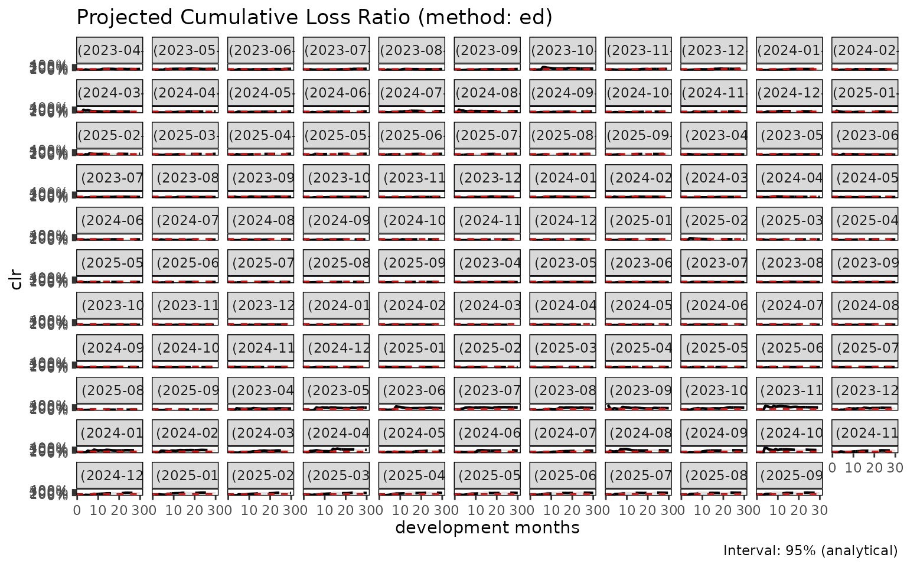
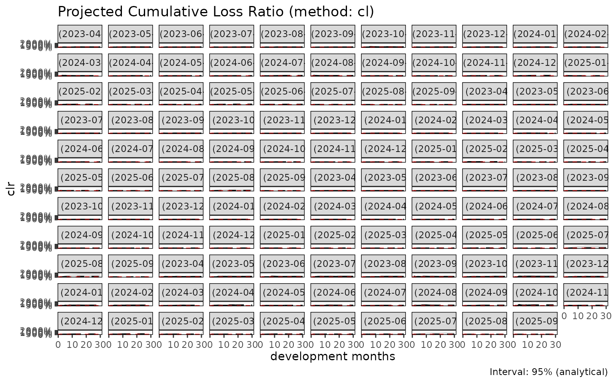

손해율 추정 방법론: SA, ED, CL
Source:vignettes/articles/loss-ratio-methods-ko.Rmd
loss-ratio-methods-ko.Rmdfit_lr() 은 triangle 객체로부터 코호트별
누적 손해율을 추정한다. 세 가지 방법이 제공되며, 본 vignette 은 각
방법의 trade-off 를 설명한다.
표기
코호트 , dev 에 대하여:
- — 누적 손해액
- — 누적 위험보험료 (익스포저)
- — 연속 발달비(age-to-age, chain ladder) 계수
- — 노출 기반(exposure-driven, ED) intensity
- 성숙점(maturity point) — 그룹 에서 가 안정화되는 dev (CV / RSE 임계값으로 탐지)
방법 1: 단계 적응적(stage-adaptive, SA) ("sa",
기본값)
기본 방법은 가 초반에는 변동성이 크고 후반에는 안정적이라는 사실, 그리고 는 그 반대로 거동한다는 사실을 활용한다. SA 는 성숙점에서 추정량을 전환한다:
거동:
- 성숙 이전: 손해 추정치를 보험료 규모에 anchor 한다. 초기 가 노이즈가 있을 때 고전적 CL 이 겪는 변동적 link 폭발을 회피한다.
- 성숙 이후: 코호트 자체의 관측 수준을 보존한다. pure ED 가 꼬리에서 겪는 “모든 코호트가 평균으로 수렴” 거동을 회피한다.
사용 시점:
- 발달이 여러 해에 걸치는 long-tail 상품.
- 최근 코호트(미성숙 데이터)와 오래된 코호트(성숙)가 혼재하는 경우.
- 성숙 이전·이후의 구조적 차이가 있는 건강보험 코호트 (예: 면책기간 전환).
library(lossratio)
data(experience)
exp <- as_experience(experience)
tri <- build_triangle(exp, group_var = cv_nm)
lr_sa <- fit_lr(tri, method = "sa") # 기본값
plot(lr_sa, type = "clr")
#> `geom_line()`: Each group consists of only one observation.
#> ℹ Do you need to adjust the group aesthetic?
#> `geom_line()`: Each group consists of only one observation.
#> ℹ Do you need to adjust the group aesthetic?
#> `geom_line()`: Each group consists of only one observation.
#> ℹ Do you need to adjust the group aesthetic?
#> `geom_line()`: Each group consists of only one observation.
#> ℹ Do you need to adjust the group aesthetic?
#> Warning: Removed 1 row containing missing values or values outside the scale range
#> (`geom_segment()`).
#> Removed 1 row containing missing values or values outside the scale range
#> (`geom_segment()`).
#> Removed 1 row containing missing values or values outside the scale range
#> (`geom_segment()`).
#> Removed 1 row containing missing values or values outside the scale range
#> (`geom_segment()`).
#> `geom_line()`: Each group consists of only one observation.
#> ℹ Do you need to adjust the group aesthetic?
#> `geom_line()`: Each group consists of only one observation.
#> ℹ Do you need to adjust the group aesthetic?
#> `geom_line()`: Each group consists of only one observation.
#> ℹ Do you need to adjust the group aesthetic?
#> `geom_line()`: Each group consists of only one observation.
#> ℹ Do you need to adjust the group aesthetic?
summary(lr_sa)
#> cv_nm cohort latest ultimate reserve exposure_ult clr_latest
#> <char> <Date> <num> <num> <num> <num> <num>
#> 1: 2CI 2023-04-01 1769961365 1769961365 0 1991886535 0.8885854
#> 2: 2CI 2023-05-01 2177258013 2408047363 230789349 2284418174 1.0198072
#> 3: 2CI 2023-06-01 2004054588 2522359218 518304630 2375671198 0.9676132
#> 4: 2CI 2023-07-01 1740086803 2284297217 544210414 2091234898 0.9992941
#> 5: 2CI 2023-08-01 1020729631 1487357605 466627974 1933805836 0.6725715
#> ---
#> 116: SUR 2025-05-01 79474575 5330755348 5251280773 3170694512 0.5208363
#> 117: SUR 2025-06-01 44351381 4669095782 4624744401 2746665433 0.4418904
#> 118: SUR 2025-07-01 12461511 6405537028 6393075517 3705335918 0.1463368
#> 119: SUR 2025-08-01 0 5151619396 5151619396 2969197221 0.0000000
#> 120: SUR 2025-09-01 0 5216378154 5216378154 2995415278 0.0000000
#> clr_ult maturity_from proc_se param_se se cv
#> <num> <num> <num> <num> <num> <num>
#> 1: 0.8885854 18 0 0 0 0.00000000
#> 2: 1.0541185 18 81021770 94495076 124474280 0.05169096
#> 3: 1.0617459 18 111885319 114904860 160379087 0.06358297
#> 4: 1.0923198 18 115767968 107391009 157908363 0.06912777
#> 5: 0.7691349 18 209491141 103506080 233666529 0.15710178
#> ---
#> 116: 1.6812579 15 2441571165 725982384 2547218125 0.47783437
#> 117: 1.6999143 15 2282292178 633588616 2368605523 0.50729427
#> 118: 1.7287331 15 2692258007 868125300 2828762046 0.44161200
#> 119: 1.7350210 15 2413061918 697300804 2511791439 0.48757318
#> 120: 1.7414541 15 2425838047 705030372 2526214175 0.48428509
#> se_clr cv_clr ci_lower ci_upper
#> <num> <num> <num> <num>
#> 1: 0.00000000 0.00000000 0.888585436 0.8885854
#> 2: 0.05448840 0.05169096 0.947323166 1.1609138
#> 3: 0.06750896 0.06358297 0.929430801 1.1940611
#> 4: 0.07550963 0.06912777 0.944323622 1.2403159
#> 5: 0.12083247 0.15710178 0.532307642 1.0059622
#> ---
#> 116: 0.80336283 0.47783437 0.106695729 3.2558202
#> 117: 0.86235677 0.50729427 0.009726071 3.3901025
#> 118: 0.76342931 0.44161200 0.232439195 3.2250271
#> 119: 0.84594968 0.48757318 0.076990049 3.3930519
#> 120: 0.84336025 0.48428509 0.088498365 3.3944098방법 2: 노출 기반(exposure-driven, ED) ("ed")
모든 미래 증분에 ED 를 적용한다:
거동:
- 보험료 규모가 전체 발달 구간에 걸쳐 정보를 가질 때 안정적이다.
- 코호트 고유의 수준 신호를 잃는다 — 관측 손해가 더 높은 코호트도 그룹 단위 로 수렴한다.
사용 시점:
- chain ladder 가 이점을 주지 않는 short-tail 상품.
- 모든 link 에서 age-to-age 계수가 신뢰할 수 없는 희소 데이터.
- SA / CL 과 비교하여 sanity check 용도.
lr_ed <- fit_lr(tri, method = "ed")
plot(lr_ed, type = "clr")
#> `geom_line()`: Each group consists of only one observation.
#> ℹ Do you need to adjust the group aesthetic?
#> `geom_line()`: Each group consists of only one observation.
#> ℹ Do you need to adjust the group aesthetic?
#> `geom_line()`: Each group consists of only one observation.
#> ℹ Do you need to adjust the group aesthetic?
#> `geom_line()`: Each group consists of only one observation.
#> ℹ Do you need to adjust the group aesthetic?
#> Warning: Removed 1 row containing missing values or values outside the scale range
#> (`geom_segment()`).
#> Removed 1 row containing missing values or values outside the scale range
#> (`geom_segment()`).
#> Removed 1 row containing missing values or values outside the scale range
#> (`geom_segment()`).
#> Removed 1 row containing missing values or values outside the scale range
#> (`geom_segment()`).
#> `geom_line()`: Each group consists of only one observation.
#> ℹ Do you need to adjust the group aesthetic?
#> `geom_line()`: Each group consists of only one observation.
#> ℹ Do you need to adjust the group aesthetic?
#> `geom_line()`: Each group consists of only one observation.
#> ℹ Do you need to adjust the group aesthetic?
#> `geom_line()`: Each group consists of only one observation.
#> ℹ Do you need to adjust the group aesthetic?
방법 3: 고전적 chain ladder ("cl")
고전적 Mack 모형:
거동:
- 표준적인 적립 실무. 손해 투영에 한해서는
fit_cl(tri, value_var = "closs")과 동등하지만,fit_lr()은 추가로crp에 대한 CL 로 익스포저를 전방 추정하고 delta method 로 손해율 불확실성을 계산한다. - 초기 가 노이즈가 있을 때 변동적이다 — 작은 분모가 link 오차를 증폭한다.
사용 시점:
- age-to-age 계수가 전체 발달 구간에서 안정적인 성숙·안정 포트폴리오.
- 규제 당국이 문서화 목적으로 고전적 Mack 형식을 요구하는 적립 작업.
lr_cl <- fit_lr(tri, method = "cl")
plot(lr_cl, type = "clr")
#> `geom_line()`: Each group consists of only one observation.
#> ℹ Do you need to adjust the group aesthetic?
#> `geom_line()`: Each group consists of only one observation.
#> ℹ Do you need to adjust the group aesthetic?
#> `geom_line()`: Each group consists of only one observation.
#> ℹ Do you need to adjust the group aesthetic?
#> `geom_line()`: Each group consists of only one observation.
#> ℹ Do you need to adjust the group aesthetic?
#> Warning: Removed 1 row containing missing values or values outside the scale range
#> (`geom_segment()`).
#> Removed 1 row containing missing values or values outside the scale range
#> (`geom_segment()`).
#> Removed 1 row containing missing values or values outside the scale range
#> (`geom_segment()`).
#> Removed 1 row containing missing values or values outside the scale range
#> (`geom_segment()`).
#> `geom_line()`: Each group consists of only one observation.
#> ℹ Do you need to adjust the group aesthetic?
#> `geom_line()`: Each group consists of only one observation.
#> ℹ Do you need to adjust the group aesthetic?
#> `geom_line()`: Each group consists of only one observation.
#> ℹ Do you need to adjust the group aesthetic?
#> `geom_line()`: Each group consists of only one observation.
#> ℹ Do you need to adjust the group aesthetic?
비교
lrs <- list(
sa = fit_lr(tri, method = "sa"),
ed = fit_lr(tri, method = "ed"),
cl = fit_lr(tri, method = "cl")
)
# 코호트 단위 요약
summary(lrs$sa)$ultimate
#> [1] 1769961365 2408047363 2522359218 2284297217 1487357605 1994001146
#> [7] 2988589705 2445448251 2569200321 2542066598 1562437905 1892621029
#> [13] 1968777980 1908366267 2039292781 3794123429 2463723982 1998365566
#> [19] 1603934657 2496432745 2861131473 1845055218 2392196327 1961413974
#> [25] 2059107725 2065941642 2230112617 1615330864 2872323158 2220898189
#> [31] 1456513239 1541495476 1257633154 1502619222 1310223639 1887287275
#> [37] 1731723945 1306927982 1947524107 1579308197 2135117636 1375380743
#> [43] 1510222234 1014225050 1703418963 948509797 1223273206 1287663798
#> [49] 1801895253 1161006963 1374851993 1834088192 1688971979 1701300247
#> [55] 1867014816 1315751586 1369532372 1197153150 1345073027 1601957181
#> [61] 1215686760 1444304949 1298364041 1027781188 1316126638 1248695550
#> [67] 1046962226 1130933419 1399722620 1274297134 1239934175 911239875
#> [73] 944277368 1323957786 1041765185 1009153969 1377255916 970975315
#> [79] 1036138599 1340998202 1060712370 1157135473 1264771509 1086740717
#> [85] 946872345 1423859980 1050210221 1367653541 1215785116 1004394044
#> [91] 3507505356 4692659098 4989741692 6249920460 4790104551 4586214482
#> [97] 6156953685 6353810849 4756961997 5310789808 5390468156 3605760085
#> [103] 7343304556 2925726831 4443751247 3113972263 5184406888 4529063006
#> [109] 6507558014 3790320997 4334152656 5036348322 4645763088 4434935578
#> [115] 4826181874 5330755348 4669095782 6405537028 5151619396 5216378154
summary(lrs$ed)$ultimate
#> [1] 1769961365 2371369509 2460337882 2211270583 1606856997 2124757581
#> [7] 2626077426 2364904728 2340670757 2495827356 1889174106 1885283426
#> [13] 1945847523 2106256656 2163228626 2956796298 2140921061 2064716732
#> [19] 1894290331 2416948826 2466039703 1884522098 2193895245 1969894294
#> [25] 2026964047 1955461676 2158256961 1583444742 2809192264 2162728815
#> [31] 1456513239 1538829011 1275714692 1491586015 1342287124 1773935325
#> [37] 1697666819 1349645259 1812684235 1625745452 1922775044 1437854891
#> [43] 1437015939 1356726029 1676749869 1327671143 1472876547 1351838452
#> [49] 1811882717 1389906597 1425420782 1806191957 1488543934 1844326199
#> [55] 1932899263 1338958697 1423947288 1240969569 1373975289 1642139384
#> [61] 1215686760 1440155089 1307980220 1054411624 1319241901 1283315379
#> [67] 1117418295 1206152143 1352972282 1283413822 1245510532 1090885427
#> [73] 1060666925 1342146750 1119141562 1198243775 1252225569 1095360704
#> [79] 1122604276 1372408410 1075777145 1147965559 1312438254 1172413516
#> [85] 979927375 1412759675 1088790354 1385687568 1245194906 1039113729
#> [91] 3507505356 4605415816 4930871386 5959788482 4672175363 4595106877
#> [97] 5855425007 5833684111 4771971051 5196228710 4958395332 3978539481
#> [103] 5694379888 3987348485 4562068898 4308983818 5154934931 4567749275
#> [109] 5117023994 4262600100 4800685044 4941956365 5200984658 4822545310
#> [115] 4891314060 5470100694 4753705577 6444449419 5169648278 5220990643
summary(lrs$cl)$ultimate
#> [1] 1769961365 2408047363 2522359218 2284297217 1487357605 1994001146
#> [7] 2988589705 2445448251 2569200321 2542066598 1562437905 1892621029
#> [13] 1968777980 1849597147 1960990647 4536653585 2848051433 1814043775
#> [19] 803899382 2610474889 4676753200 1305221077 3713175992 1365003301
#> [25] 1818998789 3599875442 2840900353 614093180 0 0
#> [31] 1456513239 1541495476 1257633154 1502619222 1310223639 1887287275
#> [37] 1731723945 1306927982 1947524107 1579308197 2135117636 1375380743
#> [43] 1510222234 1014225050 1709930281 748281800 1006119255 1218179464
#> [49] 1829438235 594622982 1292796914 2201696660 3220902659 791365041
#> [55] 1508285970 1486913260 619123757 87050260 2306673924 0
#> [61] 1215686760 1444304949 1298364041 1027781188 1316126638 1248695550
#> [67] 1046962226 1130933419 1399722620 1274297134 1239934175 911239875
#> [73] 944277368 1323957786 1035562280 950080620 1531304715 842428365
#> [79] 931313427 1388724904 1151344508 1413167331 1254215415 633273817
#> [85] 963621618 2839791792 989717711 3881172743 4917836020 0
#> [91] 3507505356 4692659098 4989741692 6249920460 4790104551 4586214482
#> [97] 6156953685 6353810849 4756961997 5310789808 5390468156 3605760085
#> [103] 7343304556 2925726831 4443751247 3113972263 5179388346 4479020413
#> [109] 7711276603 3075404317 3257251807 5092462598 2332563087 1619023322
#> [115] 3769384328 2873248566 2365070816 2312527756 0 0분산과 신뢰구간
fit_lr() 은 delta method 로 해석적 표준오차를 산출한다.
delta method 변형은 두 가지이다:
-
delta_method = "simple"(기본값) — 익스포저를 고정으로 취급, . -
delta_method = "full"— 익스포저 불확실성과 손해-익스포저 상관계수rho를 반영한다:
부트스트랩 구간도 사용 가능하다:
lr_boot <- fit_lr(tri, method = "sa", bootstrap = TRUE, B = 1000, seed = 1)
summary(lr_boot)
#> cv_nm cohort latest ultimate reserve exposure_ult clr_latest
#> <char> <Date> <num> <num> <num> <num> <num>
#> 1: 2CI 2023-04-01 1769961365 1769961365 0 1991886535 0.8885854
#> 2: 2CI 2023-05-01 2177258013 2408047363 230789349 2284418174 1.0198072
#> 3: 2CI 2023-06-01 2004054588 2522359218 518304630 2375671198 0.9676132
#> 4: 2CI 2023-07-01 1740086803 2284297217 544210414 2091234898 0.9992941
#> 5: 2CI 2023-08-01 1020729631 1487357605 466627974 1933805836 0.6725715
#> ---
#> 116: SUR 2025-05-01 79474575 5330755348 5251280773 3170694512 0.5208363
#> 117: SUR 2025-06-01 44351381 4669095782 4624744401 2746665433 0.4418904
#> 118: SUR 2025-07-01 12461511 6405537028 6393075517 3705335918 0.1463368
#> 119: SUR 2025-08-01 0 5151619396 5151619396 2969197221 0.0000000
#> 120: SUR 2025-09-01 0 5216378154 5216378154 2995415278 0.0000000
#> clr_ult maturity_from proc_se param_se se cv
#> <num> <num> <num> <num> <num> <num>
#> 1: 0.8885854 18 0 0 0 0.00000000
#> 2: 1.0541185 18 81021770 94495076 124474280 0.05169096
#> 3: 1.0617459 18 111885319 114904860 160379087 0.06358297
#> 4: 1.0923198 18 115767968 107391009 157908363 0.06912777
#> 5: 0.7691349 18 209491141 103506080 233666529 0.15710178
#> ---
#> 116: 1.6812579 15 2441571165 725982384 2547218125 0.47783437
#> 117: 1.6999143 15 2282292178 633588616 2368605523 0.50729427
#> 118: 1.7287331 15 2692258007 868125300 2828762046 0.44161200
#> 119: 1.7350210 15 2413061918 697300804 2511791439 0.48757318
#> 120: 1.7414541 15 2425838047 705030372 2526214175 0.48428509
#> se_clr cv_clr ci_lower ci_upper
#> <num> <num> <num> <num>
#> 1: 0.00000000 0.00000000 0.8885854 0.8885854
#> 2: 0.05448840 0.05169096 0.9436512 1.1684941
#> 3: 0.06750896 0.06358297 0.9426279 1.1903008
#> 4: 0.07550963 0.06912777 0.9495549 1.2411672
#> 5: 0.12083247 0.15710178 0.5477070 1.0155367
#> ---
#> 116: 0.80336283 0.47783437 0.3849513 3.6953964
#> 117: 0.86235677 0.50729427 0.2277595 3.4475374
#> 118: 0.76342931 0.44161200 0.4288979 3.3528555
#> 119: 0.84594968 0.48757318 0.2306288 3.5450720
#> 120: 0.84336025 0.48428509 0.2975347 3.5640864방법 선택
빠른 의사결정 흐름:
포트폴리오가 완전히 성숙했는가 (모든 코호트가 성숙점 이후)?
├── Yes → "cl" (고전적, 규제 친화적)
└── No
├── 초기 age-to-age 계수가 변동적인가?
│ ├── Yes → "sa" (기본 — 노출 기반 평활)
│ └── No → "cl"
└── 익스포저(rp) 가 더 정보적인 신호인가?
├── Yes → "ed"
└── No → "sa"실무: "sa" 로 시작하라 (기본값). 이후
민감도 점검을 위해 "cl" 과 "ed" 를 함께
실행한다. 셋이 모두 일치하면 추정은 견고하다. 결과가 갈라지면 성숙점
탐지와 기저 ata 계수를 점검한다.